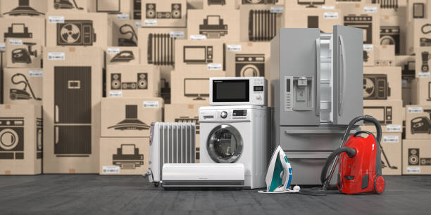

AceTech Solutions is a leading technology company specializing in providing innovative software solutions and cutting-edge IT services to clients across various industries. The company's core values revolve around customer satisfaction, employee well-being, and social responsibility. AceTech's success is attributed to its talented workforce, which forms the backbone of the organization, driving it towards achieving greater heights year after year. AceTech Solutions is grappling with a rising rate of employee attrition. The HR department needs to analyze the HR Attrition dataset to identify the factors contributing to attrition. As a data analyst for AceTech, It was a unique experience harnessing the power of visualization tools such as (Tableau) to track essential attrition KPIs, helping the company develop effective strategies for employee retention and foster a more engaged and stable workforce..

Texus Electronics, a leading technology distributor, is at the forefront of the ever-evolving electronics industry. We were contacted to build a dynamic and responsive dashboard to track some essential KPIs. Along the process of analysing the data, we came up with two distinct dashboards (Descriptive and Diagnostic Dashboards). These dashboards helped the organization gain real-time insights, and improve data-driven decision making processes which ultimately enhance overall business performance.
Grace College is a well-respected educational institution that recently recognized the need to streamline and enhance their data management processes. As part of their continuous pursuit of academic excellence, they decided to invest in a cutting-edge solution for managing information related to their departments, courses, and students. We utilized SQL to retreive valuable information from the school database and generated key insights by using Power BI to visualize students performance ratings and achievement level in relation to their courses, departments and teachers.

MEKKO Retail Inc. is a global retail chain with multiple departments ranging from Books to Automotive. With its vast presence in different countries, it serves millions of customers daily. As the company expands, it's becoming increasingly challenging for the management to keep track of customer demographics, preferences, and other vital details that can help in improving sales and customer satisfaction. The raw data makes it difficult to draw insights and make strategic decisions, leading to missed opportunities. We leveraged an interactive dashboard in Excel to visualize the data and help the management easily spot trends, understand customer preferences based on demographics, and make informed decisions.

Lewis sells office supplies, furnishings, maintenance, housekeeping equipment and public area items to various properties in different cities. He reached out to us to help him understand how his business has performed over time while providing us with data in a SQL file. As a data analyst with a clear understanding of SQL, we extracted data relevant to the analysis using syntaxes, aggregate functions and queries to generate informative insights.